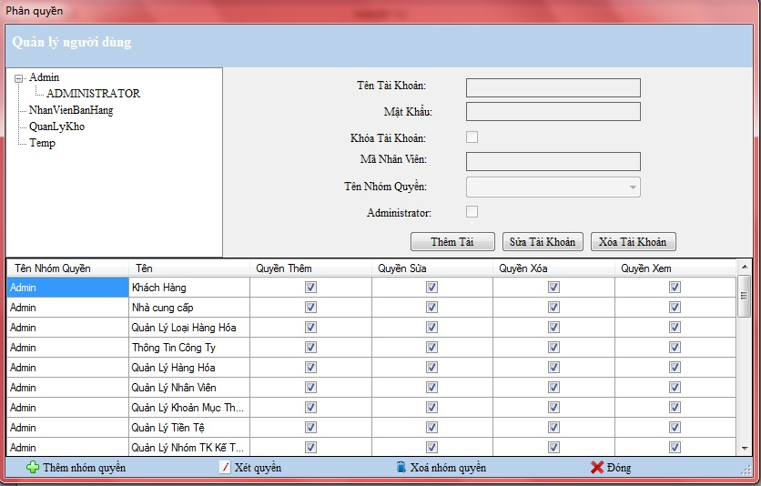
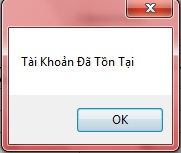

-Nếu bạn là người quản lý, bạn muốn không chỉ mình làm việc và thao tác được với chương trình. Giải pháp bây giờ là bạn tạo ra người sử dụng mới và phân quyền cho họ được phép sử dụng chức năng nào.
a.Thêm mới người dùng
Chức năng chỉ giành cho người dùng Administrator
Bước 1: Vào Hệ thống -> Khai báo người dùng

Bước 2: Kích chuột chọn Thêm tài khoản
Bước 3: Nhập tên truy cập của người dùng vào ô Tên tài khoản
Bước 4: Nhập mật khẩu đăng nhập đi cùng với chọn Mã nhân viên và Tên nhóm quyền
Bước 5: Phân quyền của người dùng bằng cách kích chuột chọn các cột (Thêm,Sửa,Xóa,Xem) tương ứng với các danh mục nếu người dùng được quyền (Thêm,Sửa,Xóa,Xem),hạn chế quyền cho người dùng bằng cách bỏ chọn các cột (Thêm,Sửa,Xóa,Xem) .
Bước 6: Kích chọn Đồng ý
Nếu chương trình hiện cảnh báo

Bạn đã không thêm thành công người dùng bởi người dùng này đã tồn tại trong hệ thống.
b.Sửa người dùng
Chức năng chỉ giành cho người dùng Administrator
Bước 1: Vào Hệ thống -> Khai báo người dùng
Bước 2: Kích chọn Tên tài khoản tương ứng trên Cây tài khoản
Bước 3: Kích chọn Sửa tài khoản
Bước 4: Nhập mật khẩu mới vào ô Mật khẩu nếu muốn thay đổi mật khẩu đi cùng với tên truy cập. Chọn Mã nhân viên và Tên nhóm quyền nếu muốn thay đổi cho người dùng .
Bước 5: Phân quyền của người dùng bằng cách kích chuột chọn các cột (Thêm,Sửa,Xóa,Xem) tương ứng với các danh mục nếu người dùng được quyền (Thêm,Sửa,Xóa,Xem),hạn chế quyền cho người dùng bằng cách bỏ chọn các cột (Thêm,Sửa,Xóa,Xem) .
Bước 6: Kích chuột chọn Đồng ý
c.Xóa người dùng
Chức năng chỉ giành cho người dùng Administrator
Bước 1: Vào Hệ thống -> Khai báo người dùng
Bước 2: Kích chọn Tên tài khoản tương ứng với Cây người dùng
Bước 3: Kích chọn nút Xóa tài khoản

Khi chương trình hiện cảnh báo như trên , nếu bạn đồng ý xóa bỏ người dùng này khỏi hệ thống chọn Yes,nếu không đồng ý chọn No.Ngay lập tức hệ thống sẽ làm tươi lại danh sách người dùng.